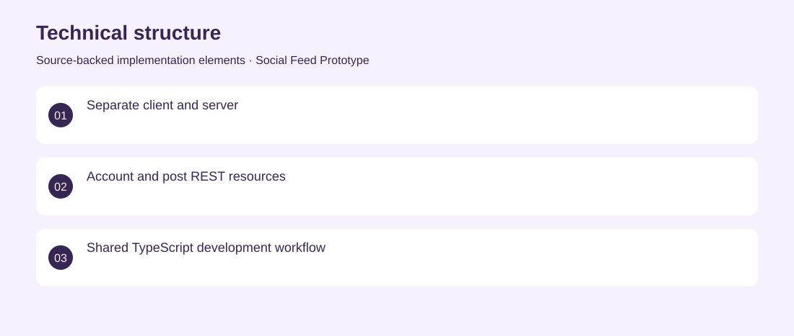

The project
A self-directed social-feed prototype pairing a React interface with an Express API. The repository implements account and post foundations and an early publishing form. Created a client/server TypeScript structure with MongoDB models, authentication and post endpoints. Archived partial prototype. No adoption, revenue or deployment claims are inferred from the repository.
The problem
A social feed requires account identity, persistent posts and a usable publishing interface to work together.
The solution
Created a client/server TypeScript structure with MongoDB models, authentication and post endpoints.
My contribution
Full-stack prototyping across API structure, persistence and initial React screens.
Technical structure

The portfolio cover is an editorial illustration. No live product screenshot is presented for this project.
Showcase assets
{kind=link}
{kind=link}
{kind=link}
New portfolio identity. Newly designed marks are portfolio treatments, not claims of official client branding.